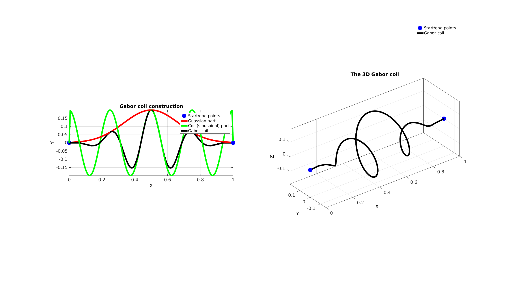
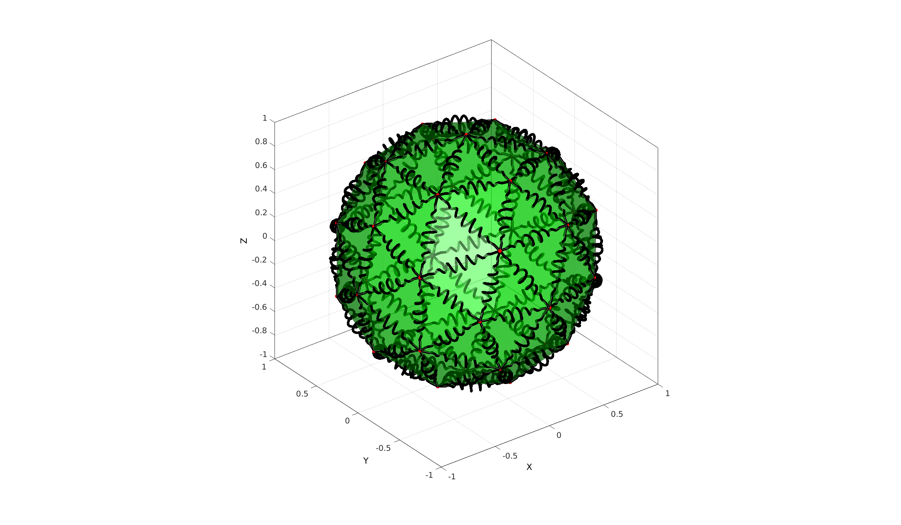

gaborCoil
Below is a demonstration of the features of the gaborCoil function
Contents
clear; close all; clc;
Syntax
[V_coil_rep]=gaborCoil(varargin);
Description
UNDOCUMENTED
Examples
Creating a single Gabor coil
V=[0 0 0; 1 0 0]; E=[1 2]; numSteps=250; numTwist=7; coilAmplitude=0.25; f=4; Vg=gaborCoil(V,E,numSteps,numTwist,coilAmplitude,4);
Visualizing coil curve
cFigure; hold on; plotV(V,'r.','markerSize',50); plotV(Vg,'k-','LineWidth',5); axisGeom; drawnow;
Creating Gabor coil on all edges in mesh
Creating example patch data
[F,V]=geoSphere(1,1);
% [F,V]=stanford_bunny;
Get patch edges
E=patchEdges(F,1);
numSteps=100; numTwist=8; coilAmplitude=0.05; f=3;
cFigure; hold on; gpatch(F,V,'g',0.5*ones(1,3),0.5); plotV(V,'r.','MarkerSize',25); axisGeom; camlight headlight;
[V_coil_rep]=gaborCoil(V,E,numSteps,numTwist,coilAmplitude,f); for q=1:1:size(V_coil_rep,3) plotV(V_coil_rep(:,:,q),'k-','lineWidth',5); end

GIBBON www.gibboncode.org
Kevin Mattheus Moerman, gibbon.toolbox@gmail.com